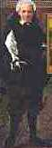
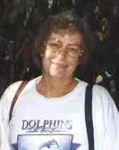
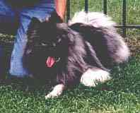
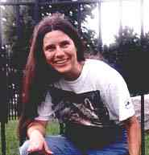
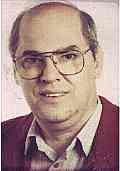

THE
EXECUTIVE COUNCIL
According to Art. 12 of its bylaws,
PASIC is led by its President and a staff of Officers
that compose the Executive Council. The Officers are co-opted among the members of PASIC
by the President. The Executive Council is composed of a Vice-President, a Secretary, a
Treasurer, an Editor and a Director.
Current
Officers
| Victor Manta, President |
|
I'm a Swiss
stamp collector, married (father to a daughter), physicist. Interested for a long time in stamp collecting, I
have chosen a long time ago the Arts on
Stamps as my main philatelic area of interest. My other interests are in the
domain of computers,
arts, music, digital photography and philatelic journalism. As other hobbies I would mention Web Mastering, tennis
and table tennis (playing as much as watching).
|
 |
| Helen Fowler, Vice-President |
I'm married, mother to
three, and grandmother to two. I collect mostly Raphael, Michelangelo, and Rubens or so I keep telling myself as I continue to expand my collection. I live in the state of Michigan in the USA. Among the other things that I do, is to create and print my own cachets for FDC. Also, occasionally, I design a pictorial cancel to be used at a local event like a stamp show.
|
 |
| Susan M. Keil, Editor and
Treasurer |
|

Hermann, Susan's dog
|
I
live in Hanover, NH, USA. I was born in 1963.
My academic education includes Mathematics and Economics. My
philatelic interests include Worldwide Arts on Stamps, especially
Paintings and reproductions of Stained Glass and Sculpture, and the
following countries or regions: Scandinavia, Ireland, Baltic,
Columbia, Liechtenstein, Luxembourg, UN, Kenya.
|
 |
| Gerhard Batz, Director |
 |
My name is GERHARD BATZ, born on November 20, 1950 at Forchheim,
Germany. I'm married and have three children. I studied social sciences and I'm working as a market research director in a big mail order company.
I live at Hausen, a small town in Franken (Franconia) which is the northern part of the German federal state Bavaria, near the well known city of Nuremberg.
|
If you agree with our Statutes and
you wish to join us at PASIC, please click the button:
Revised:
Jan. 18, 2019
.
All rights
reserved worldwide. |
|
|
| |